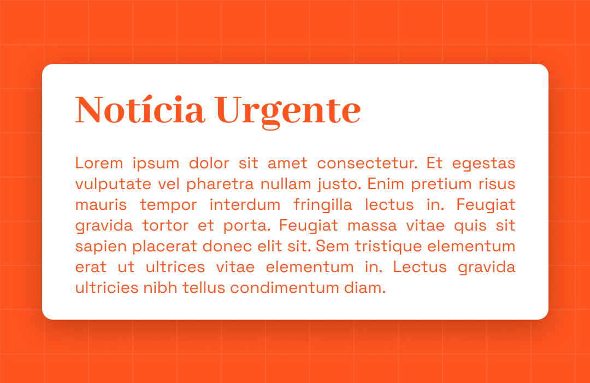

Dia 1: Introdução à Tipografia
A arte de vestir palavras. Hoje, vamos aprender a escolher o "look" certo para os seus textos e deixar uma boa impressão!
Objetivo:
Entender a diferença prática e visual entre fontes Serif e Sans-Serif e como usá-las para criar uma hierarquia simples.
Afinal, o que é essa tal de Tipografia?
Pense na tipografia como a voz do seu design. É a forma como você arruma as letras e os textos para que a leitura seja agradável, clara e atraente. Uma boa tipografia não só informa, mas também transmite emoção e guia o olhar do usuário. Um design sem uma boa tipografia é como uma pessoa falando para dentro: ninguém entende nada. Nosso objetivo é fazer seu design falar com clareza e confiança!

A Batalha do Século: Serif vs. Sans-Serif
No mundo das fontes, a briga mais clássica é entre as fontes com serifa e as sem serifa. Mas não precisa entrar em pânico, a gente te explica pra você não ficar aí, "sem serifa-ira nem beira".
- Serif (Com Serifa): São aquelas que têm pequenos "pezinhos" ou prolongamentos nas pontas das letras (pense na Times New Roman). Elas transmitem uma sensação de tradição, elegância e são ótimas para textos longos em mídias impressas, pois as serifas ajudam a guiar os olhos.
- Sans-Serif (Sem Serifa): "Sans" significa "sem" em francês. Logo, são as fontes sem os "pezinhos" (como a Arial, a Helvetica ou a que estamos usando, Space Grotesk). Elas são modernas, limpas e diretas, perfeitas para telas digitais, títulos e textos curtos.
A regra de ouro? Use o que faz sentido para a personalidade da empresa ou de onde você estiver trabalhando e, acima de tudo, o que for mais legível para o seu usuário.

Para dar o play no aprendizado
Nada melhor do que ver na prática, né? Separei dois vídeos fantásticos de canais brasileiros que vão te dar uma base sólida sobre tipografia em UI Design. Dá o play e anota as dicas!
Tipografia no UI Design - Entenda de uma vez por todas como usar (Fala Bondioli)
Como Combinar Fontes (Canal UX Design)
Seu dßesafio de hoje
Abra o Figma e crie um pequeno card de notícia. Sua missão é escolher uma fonte Serifada para o título e uma fonte não serifada para o parágrafo de texto no Google Fonts.
Brinque com os pesos (negrito , regular) e tamanhos para criar uma hierarquia visual clara, onde o título chame mais atenção que o texto.
Exemplo de Referência
Veja como o título se destaca do texto de apoio. É isso que buscamos!
Concluiu o desafio? Compartilhe!
Copie o texto abaixo e poste no LinkedIn para mostrar sua evolução.